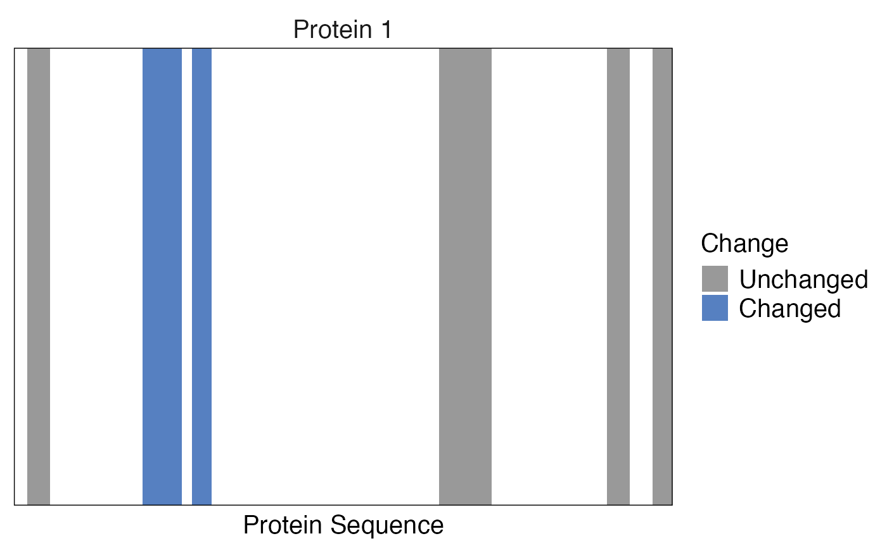

Plots a "barcode plot" - a vertical line for each identified peptide. Peptides can be colored based on an additional variable. Also differential abundance can be displayed.
barcode_plot(
data,
start_position,
end_position,
protein_length,
coverage = NULL,
colouring = NULL,
protein_id = NULL,
facet = NULL,
cutoffs = NULL
)Data frame containing differential abundance, start and end peptide or precursor positions and protein length.
Column in the data frame containing the start positions for each peptide or precursor.
Column in the data frame containing the end positions for each peptide or precursor.
Column in the data frame containing the length of the protein.
Optional, column in the data frame containing coverage in percent. Will appear in the title of the barcode if provided.
Optional argument, column in the data frame containing information by which peptide or precursors should be colored.
Optional argument, column in the data frame containing protein identifiers. Required if only one protein should be plotted and the data frame contains only information for this protein.
Optional argument, column in the data frame containing information by which data should be faceted. This can be protein identifiers. Only 20 proteins are plotted at a time, the rest is ignored. If more should be plotted, a mapper over a subsetted data frame should be created.
Optional argument specifying the log2 fold change and significance cutoffs used for highlighting peptides. If this argument is provided colouring information will be overwritten with peptides that fulfill this condition. The cutoff should be provided in a vector of the form c(diff = 2, pval = 0.05). The name of the cutoff should reflect the column name that contains this information (log2 fold changes, p-values or adjusted p-values).
A barcode plot is returned.
data <- data.frame(
start = c(5, 40, 55, 130, 181, 195),
end = c(11, 51, 60, 145, 187, 200),
length = rep(200, 6),
pg_protein_accessions = rep("Protein 1", 6),
diff = c(1, 2, 5, 2, 1, 1),
pval = c(0.1, 0.01, 0.01, 0.2, 0.2, 0.01)
)
barcode_plot(
data,
start_position = start,
end_position = end,
protein_length = length,
facet = pg_protein_accessions,
cutoffs = c(diff = 2, pval = 0.05)
)
